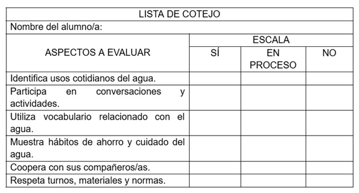
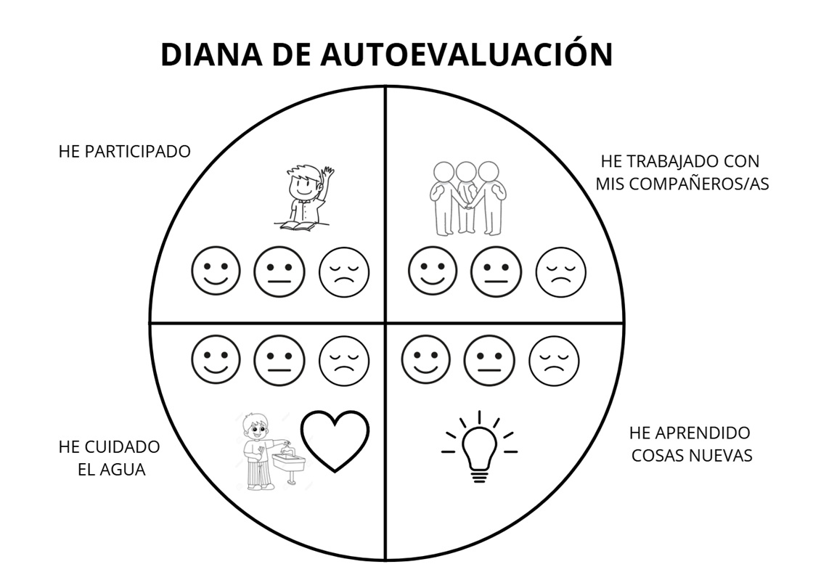

Evaluación
Las tareas que van a ser evaluadas durante esta situación de aprendizaje serán las siguientes:
- Identificar los usos del agua en la vida cotidiana.
- Desarrollar hábitos de cuidado del agua.
- Escuchar cuentos y canciones relacionadas con el agua.
- Realizar actividades de arte sobre el agua.
- Participar en juegos y experimentos: trasvases, flotación y disolución.
- Realizar una salida al entorno para buscar lugares con agua en la localidad.
- Elaborar un libro digital.
- Participar en la exposición final de los aprendizajes.
Los instrumentos de evaluación seleccionados para obtener datos tanto cuantitativos como cualitativos del alumnado en su proceso de aprendizaje durante esta situación de aprendizaje son los siguientes: lista de cotejo y diana de autoevaluación.
La lista de cotejo será utilizada por el o la docente para la evaluación, mientras que la diana de autoevaluación será el instrumento de evaluación que utilice el propio alumnado con ayuda del o la docente.
A continuación se muestra la lista de cotejo a utilizar:

La diana de autoevaluación se utilizará al finalizar actividades importantes, después de la salida al entorno y tras la exposición final. Los aspectos que se evaluarán serán: la participación, el interés, el trabajo en equipo, el cuidado del agua y la comprensión de los aprendizajes.
El alumnado coloreará la carita en la zona de la diana que represente cómo cree que se ha sentido o cómo valora su trabajo. Esa información permitirá fomentar la autoevaluación, desarrollar la conciencia sobre el propio aprendizaje, detectar las actividades que más le gustan y las que menos para así mejorar.
A continuación se muestra la diana de autoevaluación:
